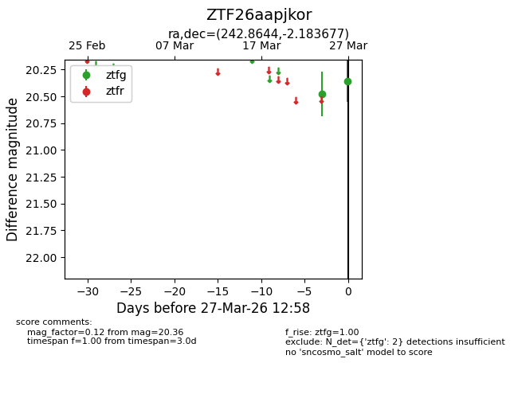
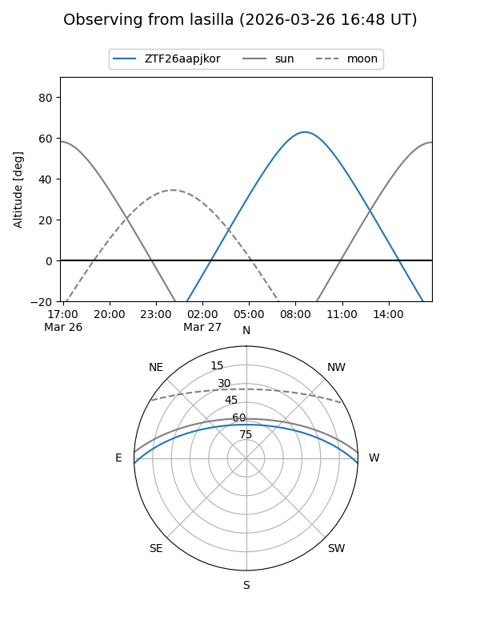
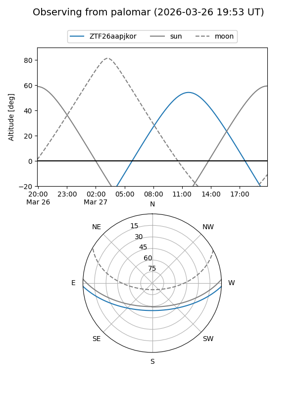

ZTF26aapjkor
Target ZTF26aapjkor at 2026-03-27 13:00
Aliases and brokers:
FINK: link
Lasair: link
ALeRCE: link
alt names
ZTF26aapjkor (ztf,fink_ztf)
Coordinates:
equatorial (ra, dec) = 242.8644,-2.18368
equatorial (HMS+DMS) = 16:11:27.45,-02:11:01.24
galactic (l, b) = (9.8169,+33.65737)
Flags:
Photometry:
last ztfg=20.36
2 ztfg detections
Lightcurve

Visibility


Additional plots